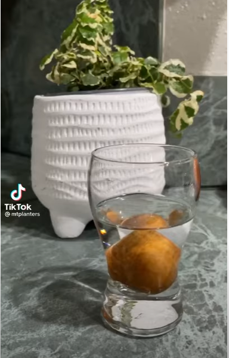
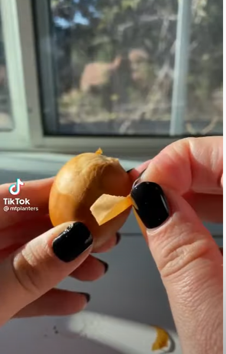
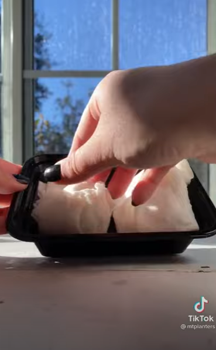

Step 1 Start by removing the pit of a ripe avocado without damaging it.
Clean off any fruit on the seed gently by placing it under warm, running water.
Some people recommend soaking the pit in warm water overnight. But this is not a compulsory step.
You may also try peel off the seed covering. But it is not necessary..


Step 2 Dampen a sheet of paper towel. Then wrap the seed in it
Step 3 With the wrapped seed inside, place the plastic food bag or plastic container in a warm, dark place
A dark kitchen cabinet or cupboard may suffice for this purpose.

Step 4 Check on the pit every 5 to 7 days.
Whenever you check on your avocado seed, replace the damp paper towel. This way, you can ensure that the environment around the pit does not go dry and that molds do not form.
After a few weeks, the pit should start sprouting.
Learn even more about the Avocado Tree Plant
Things To Note
Try to fill the glass with a fresh water every 5 to 7 days.
When the avocado seed is about to sprout, it will form a crack from top to bottom and dry out.
From the bottom crack, one or more taproots will eventually emerge. Then, later, a stem will appear at the upper end of the pit.
Once the taproot shows, never let it dry out. Else, the seed will die.
When the stem is at least 3 inches long, you may transfer it into the soil.